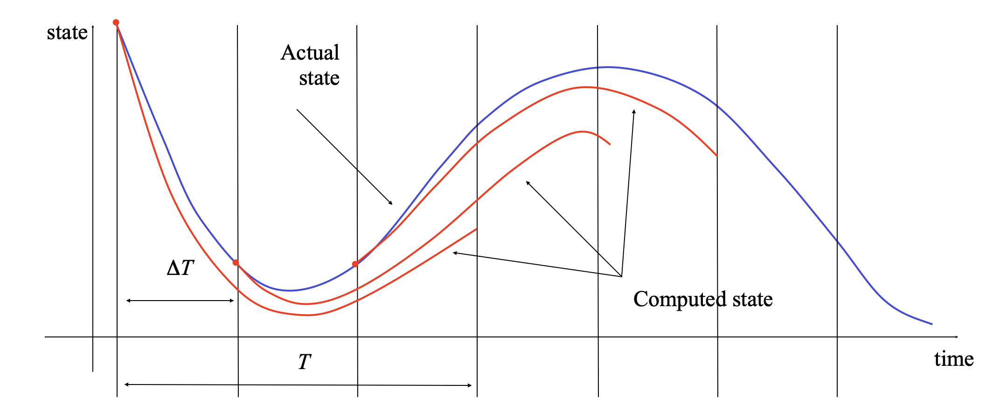
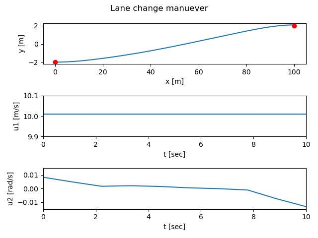

Optimization-based control¶
The control.optimal module provides support for optimization-based
controllers for nonlinear systems with state and input constraints.
The docstring examples assume that the following import commands:
>>> import numpy as np
>>> import control as ct
>>> import control.optimal as obc
Optimal control problem setup¶
Consider the optimal control problem:
\min_{u(\cdot)} \int_0^T L(x,u)\, dt + V \bigl( x(T) \bigr)
subject to the constraint
\dot x = f(x, u), \qquad x\in\mathbb{R}^n,\, u\in\mathbb{R}^m.
Abstractly, this is a constrained optimization problem where we seek a feasible trajectory (x(t), u(t)) that minimizes the cost function
J(x, u) = \int_0^T L(x, u)\, dt + V \bigl( x(T) \bigr).
More formally, this problem is equivalent to the “standard” problem of minimizing a cost function J(x, u) where (x, u) \in L_2[0,T] (the set of square integrable functions) and h(z) = \dot x(t) - f(x(t), u(t)) = 0 models the dynamics. The term L(x, u) is referred to as the integral (or trajectory) cost and V(x(T)) is the final (or terminal) cost.
It is often convenient to ask that the final value of the trajectory, denoted x_\text{f}, be specified. We can do this by requiring that x(T) = x_\text{f} or by using a more general form of constraint:
\psi_i(x(T)) = 0, \qquad i = 1, \dots, q.
The fully constrained case is obtained by setting q = n and defining \psi_i(x(T)) = x_i(T) - x_{i,\text{f}}. For a control problem with a full set of terminal constraints, V(x(T)) can be omitted (since its value is fixed).
Finally, we may wish to consider optimizations in which either the state or the inputs are constrained by a set of nonlinear functions of the form
\text{lb}_i \leq g_i(x, u) \leq \text{ub}_i, \qquad i = 1, \dots, k.
where \text{lb}_i and \text{ub}_i represent lower and upper bounds on the constraint function g_i. Note that these constraints can be on the input, the state, or combinations of input and state, depending on the form of g_i. Furthermore, these constraints are intended to hold at all instants in time along the trajectory.
For a discrete time system, the same basic formulation applies except that the cost function is given by
J(x, u) = \sum_{k=0}^{N-1} L(x_k, u_k)\, dt + V(x_N).
A common use of optimization-based control techniques is the implementation of model predictive control (also called receding horizon control). In model predictive control, a finite horizon optimal control problem is solved, generating open-loop state and control trajectories. The resulting control trajectory is applied to the system for a fraction of the horizon length. This process is then repeated, resulting in a sampled data feedback law. This approach is illustrated in the following figure:
Every \Delta T seconds, an optimal control problem is solved over a T second horizon, starting from the current state. The first \Delta T seconds of the optimal control u_T^{\*}(\cdot; x(t)) is then applied to the system. If we let x_T^{\*}(\cdot; x(t)) represent the optimal trajectory starting from x(t) then the system state evolves from x(t) at current time t to x_T^{*}(\delta T, x(t)) at the next sample time t + \Delta T, assuming no model uncertainty.
In reality, the system will not follow the predicted path exactly, so that the red (computed) and blue (actual) trajectories will diverge. We thus recompute the optimal path from the new state at time t + \Delta T, extending our horizon by an additional \Delta T units of time. This approach can be shown to generate stabilizing control laws under suitable conditions (see, for example, the FBS2e supplement on Optimization-Based Control.
Optimal estimation problem setup¶
Consider a nonlinear system with discrete time dynamics of the form
(1)¶X[k+1] = f(X[k], u[k], V[k]), \qquad Y[k] = h(X[k]) + W[k],
where X[k] \in \mathbb{R}^n, u[k] \in \mathbb{R}^m, and Y[k] \in \mathbb{R}^p, and V[k] \in \mathbb{R}^q and W[k] \in \mathbb{R}^p represent random processes that are not necessarily Gaussian white noise processes. The estimation problem that we wish to solve is to find the estimate \hat x[\cdot] that matches the measured outputs y[\cdot] with “likely” disturbances and noise.
For a fixed horizon of length N, this problem can be formulated as an optimization problem where we define the likelihood of a given estimate (and the resulting noise and disturbances predicted by the model) as a cost function. Suppose we model the likelihood using a conditional probability density function p(x[0], \dots, x[N] \mid y[0], \dots, y[N-1]). Then we can pose the state estimation problem as
(2)¶\hat x[0], \dots, \hat x[N] = \arg \max_{\hat x[0], \dots, \hat x[N]} p(\hat x[0], \dots, \hat x[N] \mid y[0], \dots, y[N-1])
subject to the constraints given by equation (1). The result of this optimization gives us the estimated state for the previous N steps in time, including the “current” time x[N]. The basic idea is thus to compute the state estimate that is most consistent with our model and penalize the noise and disturbances according to how likely they are (based on the given stochastic system model for each).
Given a solution to this fixed-horizon optimal estimation problem, we can create an estimator for the state over all times by repeatedly applying the optimization problem (2) over a moving horizon. At each time k, we take the measurements for the last N time steps along with the previously estimated state at the start of the horizon, x[k-N] and reapply the optimization in equation (2). This approach is known as a define{moving horizon estimator} (MHE).
The formulation for the moving horizon estimation problem is very general and various situations can be captured using the conditional probability function p(x[0], \dots, x[N] \mid y[0], \dots, y[N-1]. We start by noting that if the disturbances are independent of the underlying states of the system, we can write the conditional probability as
p \bigl(x[0], \dots, x[N] \mid y[0], \dots, y[N-1]\bigr) = p_{X[0]}(x[0])\, \prod_{k=0}^{N-1} p_V\bigl(y[k] - h(x[k])\bigr)\, p\bigl(x[k+1] \mid x[k]\bigr).
This expression can be further simplified by taking the log of the expression and maximizing the function
(3)¶\log p_{X[0]}(x[0]) + \sum_{k=0}^{N-1} \log p_W \bigl(y[k] - h(x[k])\bigr) + \log p_V(v[k]).
The first term represents the likelihood of the initial state, the second term captures the likelihood of the noise signal, and the final term captures the likelihood of the disturbances.
If we return to the case where V and W are modeled as Gaussian processes, then it can be shown that maximizing equation (3) is equivalent to solving the optimization problem given by
(4)¶\min_{x[0], \{v[0], \dots, v[N-1]\}} \|x[0] - \bar x[0]\|_{P_0^{-1}} + \sum_{k=0}^{N-1} \|y[k] - h(x_k)\|_{R_W^{-1}}^2 + \|v[k] \|_{R_V^{-1}}^2,
where P_0, R_V, and R_W are the covariances of the initial state, disturbances, and measurement noise.
Note that while the optimization is carried out only over the estimated initial state \hat x[0], the entire history of estimated states can be reconstructed using the system dynamics:
\hat x[k+1] = f(\hat x[k], u[k], v[k]), \quad k = 0, \dots, N-1.
In particular, we can obtain the estimated state at the end of the moving horizon window, corresponding to the current time, and we can thus implement an estimator by repeatedly solving the optimization of a window of length N backwards in time.
Module usage¶
The optimization-based control module provides a means of computing optimal trajectories for nonlinear systems and implementing optimization-based controllers, including model predictive control and moving horizon estimation. It follows the basic problem setups described above, but carries out all computations in discrete time (so that integrals become sums) and over a finite horizon. To local the optimal control modules, import control.optimal:
import control.optimal as obc
To describe an optimal control problem we need an input/output system, a
time horizon, a cost function, and (optionally) a set of constraints on the
state and/or input, either along the trajectory and at the terminal time.
The optimal control module operates by converting the optimal control
problem into a standard optimization problem that can be solved by
scipy.optimize.minimize(). The optimal control problem can be solved
by using the solve_ocp() function:
res = obc.solve_ocp(sys, timepts, X0, cost, constraints)
The sys parameter should be an InputOutputSystem and the
timepts parameter should represent a time vector that gives the list of
times at which the cost and constraints should be evaluated.
The cost function has call signature cost(t, x, u) and should return the (incremental) cost at the given time, state, and input. It will be evaluated at each point in the timepts vector. The terminal_cost parameter can be used to specify a cost function for the final point in the trajectory.
The constraints parameter is a list of constraints similar to that used by
the scipy.optimize.minimize() function. Each constraint is specified
using one of the following forms:
LinearConstraint(A, lb, ub)
NonlinearConstraint(f, lb, ub)
For a linear constraint, the 2D array A is multiplied by a vector consisting of the current state x and current input u stacked vertically, then compared with the upper and lower bound. This constraint is satisfied if
lb <= A @ np.hstack([x, u]) <= ub
A nonlinear constraint is satisfied if
lb <= f(x, u) <= ub
By default, constraints are taken to be trajectory constraints holding at all points on the trajectory. The terminal_constraint parameter can be used to specify a constraint that only holds at the final point of the trajectory.
The return value for solve_ocp() is a bundle object
that has the following elements:
res.success: True if the optimization was successfully solved
res.inputs: optimal input
res.states: state trajectory (if return_x was True)
res.time: copy of the time timepts vector
In addition, the results from scipy.optimize.minimize() are also
available.
To simplify the specification of cost functions and constraints, the
ios module defines a number of utility functions for
optimal control problems:
|
Create quadratic cost function |
|
Create input constraint from polytope |
|
Create input constraint from polytope |
|
Create output constraint from polytope |
|
Create output constraint from range |
|
Create state constraint from polytope |
|
Create state constraint from range |
The optimization-based control module also implements functions for solving
optimal estimation problems. The
OptimalEstimationProblem class is used to define
an optimal estimation problem over a finite horizon:
oep = OptimalEstimationProblem(sys, timepts, cost[, constraints])
Given noisy measurements y and control inputs u, an
estimate of the states over the time points can be computed using the
compute_estimate() method:
estim = oep.compute_optimal(Y, U[, X0=x0, initial_guess=(xhat, v)])
xhat, v, w = estim.states, estim.inputs, estim.outputs
For discrete time systems, the
create_mhe_iosystem()
method can be used to generate an input/output system that implements a
moving horizon estimator.
Several functions are available to help set up standard optimal estimation problems:
|
Create cost function for Gaussian likelihoods |
|
Create constraint for bounded disturbances |
Example¶
Consider the vehicle steering example described in FBS2e. The dynamics of the system can be defined as a nonlinear input/output system using the following code:
import numpy as np
import control as ct
import control.optimal as opt
import matplotlib.pyplot as plt
def vehicle_update(t, x, u, params):
# Get the parameters for the model
l = params.get('wheelbase', 3.) # vehicle wheelbase
phimax = params.get('maxsteer', 0.5) # max steering angle (rad)
# Saturate the steering input
phi = np.clip(u[1], -phimax, phimax)
# Return the derivative of the state
return np.array([
np.cos(x[2]) * u[0], # xdot = cos(theta) v
np.sin(x[2]) * u[0], # ydot = sin(theta) v
(u[0] / l) * np.tan(phi) # thdot = v/l tan(phi)
])
def vehicle_output(t, x, u, params):
return x # return x, y, theta (full state)
# Define the vehicle steering dynamics as an input/output system
vehicle = ct.NonlinearIOSystem(
vehicle_update, vehicle_output, states=3, name='vehicle',
inputs=('v', 'phi'), outputs=('x', 'y', 'theta'))
We consider an optimal control problem that consists of “changing lanes” by moving from the point x = 0 m, y = -2 m, \theta = 0 to the point x = 100 m, y = 2 m, \theta = 0) over a period of 10 seconds and with a starting and ending velocity of 10 m/s:
x0 = np.array([0., -2., 0.]); u0 = np.array([10., 0.])
xf = np.array([100., 2., 0.]); uf = np.array([10., 0.])
Tf = 10
To set up the optimal control problem we design a cost function that penalizes the state and input using quadratic cost functions:
Q = np.diag([0, 0, 0.1]) # don't turn too sharply
R = np.diag([1, 1]) # keep inputs small
P = np.diag([1000, 1000, 1000]) # get close to final point
traj_cost = obc.quadratic_cost(vehicle, Q, R, x0=xf, u0=uf)
term_cost = obc.quadratic_cost(vehicle, P, 0, x0=xf)
We also constrain the maximum turning rate to 0.1 radians (about 6 degrees) and constrain the velocity to be in the range of 9 m/s to 11 m/s:
constraints = [ obc.input_range_constraint(vehicle, [8, -0.1], [12, 0.1]) ]
Finally, we solve for the optimal inputs:
timepts = np.linspace(0, Tf, 10, endpoint=True)
result = obc.solve_ocp(
vehicle, timepts, x0, traj_cost, constraints,
terminal_cost=term_cost, initial_guess=u0)
Plotting the results:
# Simulate the system dynamics (open loop)
resp = ct.input_output_response(
vehicle, timepts, result.inputs, x0,
t_eval=np.linspace(0, Tf, 100))
t, y, u = resp.time, resp.outputs, resp.inputs
plt.subplot(3, 1, 1)
plt.plot(y[0], y[1])
plt.plot(x0[0], x0[1], 'ro', xf[0], xf[1], 'ro')
plt.xlabel("x [m]")
plt.ylabel("y [m]")
plt.subplot(3, 1, 2)
plt.plot(t, u[0])
plt.axis([0, 10, 9.9, 10.1])
plt.xlabel("t [sec]")
plt.ylabel("u1 [m/s]")
plt.subplot(3, 1, 3)
plt.plot(t, u[1])
plt.axis([0, 10, -0.015, 0.015])
plt.xlabel("t [sec]")
plt.ylabel("u2 [rad/s]")
plt.suptitle("Lane change manuever")
plt.tight_layout()
plt.show()
yields
An example showing the use of the optimal estimation problem and moving horizon estimation (MHE) is given in the mhe-pvtol Jupyter notebook.
Optimization Tips¶
The python-control optimization module makes use of the SciPy optimization toolbox and it can sometimes be tricky to get the optimization to converge. If you are getting errors when solving optimal control problems or your solutions do not seem close to optimal, here are a few things to try:
The initial guess matters: providing a reasonable initial guess is often needed in order for the optimizer to find a good answer. For an optimal control problem that uses a larger terminal cost to get to a neighborhood of a final point, a straight line in the state space often works well.
Less is more: try using a smaller number of time points in your optimization. The default optimal control problem formulation uses the value of the inputs at each time point as a free variable and this can generate a large number of parameters quickly. Often you can find very good solutions with a small number of free variables (the example above uses 3 time points for 2 inputs, so a total of 6 optimization variables). Note that you can “resample” the optimal trajectory by running a simulation of the system and using the t_eval keyword in input_output_response (as done above).
Use a smooth basis: as an alternative to parameterizing the optimal control inputs using the value of the control at the listed time points, you can specify a set of basis functions using the basis keyword in
solve_ocp()and then parameterize the controller by linear combination of the basis functions. Thecontrol.flatsysmodule defines several sets of basis functions that can be used.Tweak the optimizer: by using the minimize_method, minimize_options, and minimize_kwargs keywords in
solve_ocp(), you can choose the SciPy optimization function that you use and set many parameters. Seescipy.optimize.minimize()for more information on the optimizers that are available and the options and keywords that they accept.Walk before you run: try setting up a simpler version of the optimization, remove constraints or simplifying the cost to get a simple version of the problem working and then add complexity. Sometimes this can help you find the right set of options or identify situations in which you are being too aggressive in what you are trying to get the system to do.
See Optimal control for vehicle steering (lane change) for some examples of different problem formulations.
Module classes and functions¶
The following classes and functions are defined in the
optimal module:
|
Description of a finite horizon, optimal control problem. |
|
Result from solving an optimal control problem. |
|
Description of a finite horizon, optimal estimation problem. |
|
Result from solving an optimal estimationproblem. |
|
Create a model predictive I/O control system |
|
Create constraint for bounded disturbances |
|
Create cost function for Gaussian likelihoods |
|
Create input constraint from polytope |
|
Create input constraint from polytope |
|
Create output constraint from polytope |
|
Create output constraint from range |
|
Create quadratic cost function |
|
Compute the solution to an optimal control problem. |
|
Create state constraint from polytope |
|
Create state constraint from range |